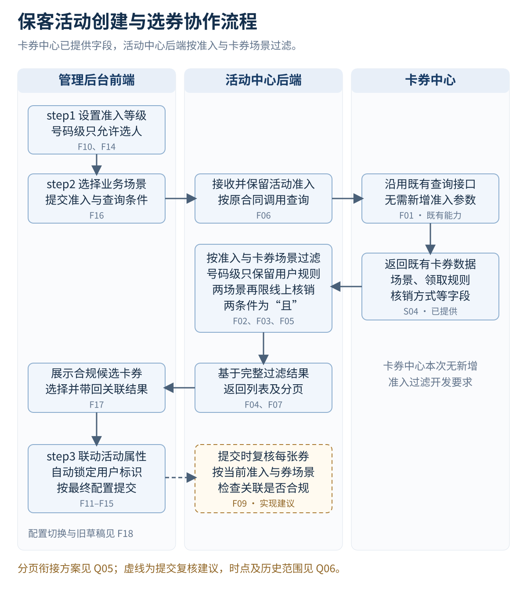
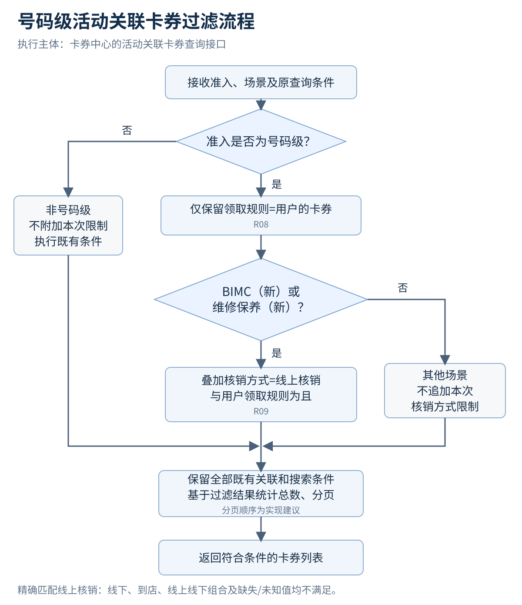

1 目标与改造范围
保客活动创建时，先在step1设置准入等级，再按等级与业务场景筛选step2可关联卡券，并联动step3的活动属性和用户标识。号码级活动仅允许选人；在卡券关联环节，仅允许用户领取规则券，指定场景还须为线上核销。
| 责任系统 | 本次改造 | 功能编号 |
|---|---|---|
| 卡券中心 | 调整活动关联卡券查询接口，识别活动准入等级，按场景执行领取规则与核销方式过滤。 | F01–F05 |
| 活动中心后端 | 调整前端与卡券中心之间的接口对接，传递查询上下文并适配返回结果。 | F06–F09 |
| 管理后台前端 | 前移准入配置，联动属性默认值及标识，按准入查询和展示关联卡券。 | F10–F18 |
核心规则
号码级优先限制可选范围，商城复选再取交集，最后应用活动类型默认值。是否必填独立判断，不能将“只可选人”解释为所有类型都必须填写。
号码级卡券过滤为两层条件：所有场景先要求“领取规则=用户”；BIMC（新）和维修保养（新）再要求“核销方式=线上核销”。两项必须同时满足。
评审范围
本次覆盖新建活动的页面联动与活动关联卡券查询改造。历史活动编辑、复制、旧调用兼容和提交复核的具体责任见第8节待确认事项。用户标识仍为oneid和VIN，不新增手机号发券主键。
功能清单共18项，另附22个验收场景。功能项中的“实现建议”需在接口或交互评审时确认。
2 三系统协作流程

虚线表示提交复核建议。卡券中心负责返回经过规则过滤的结果；活动中心后端负责传参和结果适配。
3 卡券查询过滤流程

4 卡券过滤规则
以下条件叠加在现有卡券关联条件上。通过新增过滤仅表示满足本次规则，仍需满足既有状态、场景等关联要求。
| 准入与卡券场景 | 领取规则 | 核销方式 | 本次新增规则结果 |
|---|---|---|---|
| 号码级；BIMC（新）或维修保养（新） | 用户 | 线上核销 | 通过两项新增条件 |
| 同上 | 用户 | 线下或到店核销 | 不返回，不允许关联 |
| 同上 | 用户 | 线上线下组合，或缺失/未知 | 不满足精确匹配，不放行 |
| 同上 | VIN或无法确认是用户 | 线上核销 | 不满足用户规则，不放行 |
| 号码级；其他未列明场景 | 用户 | 按既有规则 | 不追加本次核销限制 |
| 非号码级；任意场景 | 按既有规则 | 按既有规则 | 不追加号码级专属限制 |
精确匹配
“线上核销”要求核销方式等于该业务含义，不能用名称包含“线上”判断。线上与线下组合、缺失和未知值均不等于线上核销。边界示例不代表真实接口已经存在对应枚举；正式编码须由卡券中心提供。
按场景判断
BIMC（新）和维修保养（新）的线上核销限制与用户领取规则为“且”。其他未列明场景仅追加用户领取规则限制；非号码级不附加本次专有限制。不得根据券名猜测场景或扩大限制范围。
查询完整性
搜索、刷新、重置和翻页必须持续应用准入条件。建议在全部适用条件过滤后统计总数和分页，避免只从当前页删除不合规券而造成页数和结果缺失。无结果时返回空集合和总数0的具体格式按正式接口合同约定。
5 前端字段与联动规则
准入配置位置
将step3的整个准入配置区移到step1，放在活动启停用上方。当前页面使用“活动状态”标签。准入等级、校验节点及原有提示一起前移，step3删除重复区域。当前原型沿用C端主动参与活动显示准入，其他类型见Q01。
| 场景 | 活动属性规则 | 必填性与补充 |
|---|---|---|
| C端主动参与活动 | 默认选车 | 号码级覆盖为仅选人；非号码级额外禁选见Q02 |
| 商城周边 | 默认选人 | 非必填；单选时额外禁选见Q03 |
| 用户行为触发、商城售后 | 本次未新增默认值 | 非必填，可清空 |
| 商城售后与商城周边复选 | 可选范围为交集：仅选人 | 非必填，可清空 |
| 号码级 | 仅允许选人，优先于默认选车 | 是否必填仍由活动类型决定 |
| 活动属性 | 自动勾选的用户标识 | 是否允许手动编辑 |
|---|---|---|
| 选人 | oneid | 不允许 |
| 选车 | VIN | 不允许 |
| 选人+车 | oneid、VIN | 不允许 |
| 空值（仅非必填） | 不保留旧勾选 | 按属性状态展示 |
选人+车时，oneid与VIN为“且”，两个字段均一致时才可发放或领取。真实服务执行需联调验证。活动属性为空时的执行语义见Q07。
原型建议：切换准入后自动纠正不兼容属性；冲突卡券保留可见，显示原因并要求重选或移除，阻止继续和保存。正式交互策略见Q04。
6 接口对接改造
提供方为卡券中心，调用方为活动中心后端。前端提交当前活动准入和查询上下文，活动中心后端完成正式字段映射，卡券中心执行过滤。以下为业务语义，不作为正式字段名或枚举编码。
| 方向 | 业务信息 | 要求 |
|---|---|---|
| 请求 | 活动准入等级 | 号码级用于触发过滤。未传、未知值与旧调用兼容见Q05。 |
| 请求 | 卡券业务场景 | 保留当前场景查询。以正式场景编码识别BIMC（新）及维修保养（新）。 |
| 请求 | 券ID、名称、分页条件 | 保留既有搜索能力，并持续携带准入条件。 |
| 响应（建议） | 卡券标识、名称及场景 | 满足原关联结果带回；场景用于逐券复核。 |
| 响应（建议） | 领取规则、核销方式 | 支持展示与校验，不从券名猜测规则。 |
| 响应（建议） | 过滤后的列表、总数与分页信息 | 前端展示服务端结果，不补回被过滤券。 |
卡券中心
F01–F03负责识别号码级并应用场景过滤。F04将同一规则覆盖搜索与分页路径。F05建议补齐校验所需返回信息，字段是否已有及如何兼容需核对正式合同。
活动中心后端
F06–F07调整入参、服务调用和返回适配。仅做前端过滤不能替代卡券中心查询过滤。F08建议在号码级查询失败时提示重试，避免降级到未过滤数据。
提交复核建议
F09建议在提交时按当前准入与每张券自身场景重新校验，覆盖旧草稿、等级切换及卡券配置变化。校验数据来源、接口责任和拦截时点见Q06；不因列表已经过滤就假定旧关联永久有效。
7 验收要点与原型使用
| 验收范围 | 关键预期 | 对应场景 |
|---|---|---|
| 位置与属性默认值 | 准入前移；C端默认车、商城周边默认人，号码级覆盖为仅人。 | AC01–AC03、AC06 |
| 非必填与交集 | 三类非必填可清空，商城复选只可选人；号码级不改变独立必填性。 | AC04、AC05、AC07 |
| 用户标识 | 自动锁定oneid/VIN，人+车同时一致才可发放或领取。 | AC08–AC10 |
| 双条件正反例 | 两场景用户+仅线上通过；VIN、线下、组合、未知值不通过。 | AC11–AC14 |
| 范围回归 | 其他场景及非号码级不被附加两场景的核销限制。 | AC15、AC16 |
| 搜索与分页 | 券ID、名称、重置、刷新、翻页不能绕过条件；空结果可识别。 | AC17、AC19 |
| 配置变化与旧草稿 | 按确认后的策略处理冲突并阻止非法关联。 | AC18、AC20 |
| 接口与异常 | 正式字段正确传递和映射，超时与旧调用按约定处理。 | AC21、AC22 |
原型标注
原型右侧“页面标注”可折叠，并随step1、step2、step3及选券弹窗切换说明。点击编号或“定位字段”定位对应区域。标注使用F01–F18功能编号，褐色文字说明建议或待确认项。窄屏定位后自动收起标注，便于查看字段。
验收边界
当前交付包括需求资料与本地静态原型。DEMO卡券用于展示规则，不能反推真实卡券配置或正式枚举。接口实现、SIT保存、真实发券/领券的人车且校验以及历史活动兼容均需另行研发联调和业务验收。
功能清单附完整22个验收场景，其“确认层级”说明哪些场景可按已确认规则验收，哪些需先完成范围、合同或交互策略确认。
8 待确认事项
| 编号 | 事项 | 待确认内容 |
|---|---|---|
| Q01 | 准入展示范围 | 目前原型沿用C端主动参与活动可见。是否扩展至用户行为触发、商城及其他活动类型。 |
| Q02 | 非号码级C端禁选范围 | 默认选车已确认。SIT额外禁用选人和选人+车是否保留，需要明确。 |
| Q03 | 商城周边单选的可选范围 | 默认选人已确认；是否同时禁止另外两项未独立确认。当前原型保留原有禁选表达，不能据此扩大规则。 |
| Q04 | 切换时的旧选择 | 属性自动纠正和冲突券保留提示为原型方案。正式采用自动清空、保留待修正还是切换确认。 |
| Q05 | 查询接口技术合同 | 接口地址、方法、准入/场景/领取规则/核销方式正式字段及枚举、鉴权、分页、错误码与未传等级兼容。 |
| Q06 | 提交复核与历史数据 | 服务端复核接口由谁提供、何时调用，以及历史活动编辑/复制/草稿的兼容范围。 |
| Q07 | 非必填空值的执行语义 | 属性为空时的真实发放/领取逻辑沿用何种既有处理；不能由原型自行兜底为手机号、oneid或VIN。 |
| Q08 | 后续场景扩展 | 本次精确线上核销限制仅点名BIMC（新）和维修保养（新）。其他同类场景如需扩展应补充明确清单。 |
需求依据
S01 用户首次调整要求：准入前移、属性单选与默认值、非必填、商城交集、用户标识、号码级选人及用户领取规则。
S02 用户线上核销补充：BIMC（新）和维修保养（新）仅线上核销可关联号码级活动。
S03 用户本次职责划分：卡券中心按准入与场景过滤，活动中心后端调整对接，管理后台调整位置及属性默认值。
J01 本次评审建议：分页顺序、返回信息、提交复核、异常兼容与旧选择处理；具体合同或策略待确认。
{kind=link}
{kind=link}
{kind=link}
{kind=link}